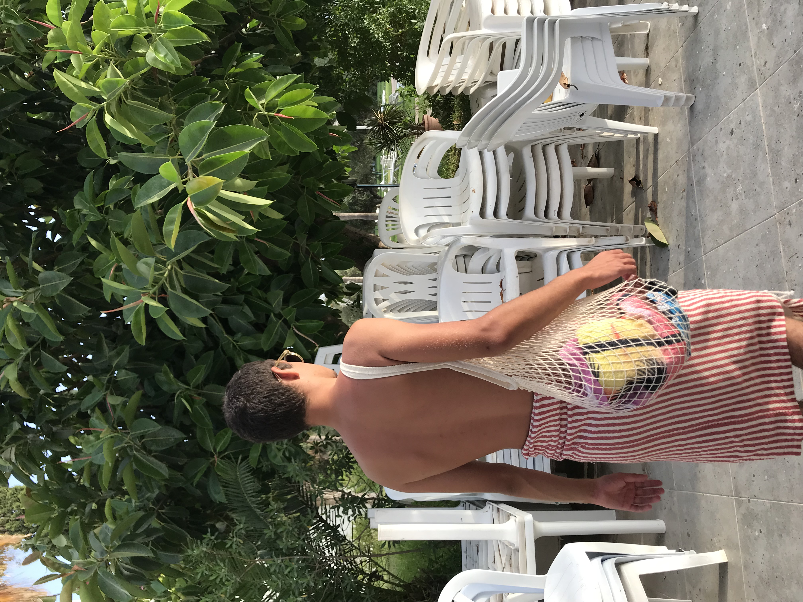

|  | Laissez-vous séduire par le charme et les superbes plages d'Hammamet ! Situé sur la côte sud Est de la péninsule du Cap Bon, Hammamet c’est le "Saint-Tropez tunisien", dans un cadre verdoyant avec des vergers de citronniers et d’orangers. Vous pourrez également flâner sur les marchés à la recherche de belles poteries locales et vous balader dans la vieille ville (Médina) dont les murs d’enceinte datent de 1500 ans. En été, c’est l’époque des festivals de musique et de théâtre, à ne manquer sous aucun prétexte! |